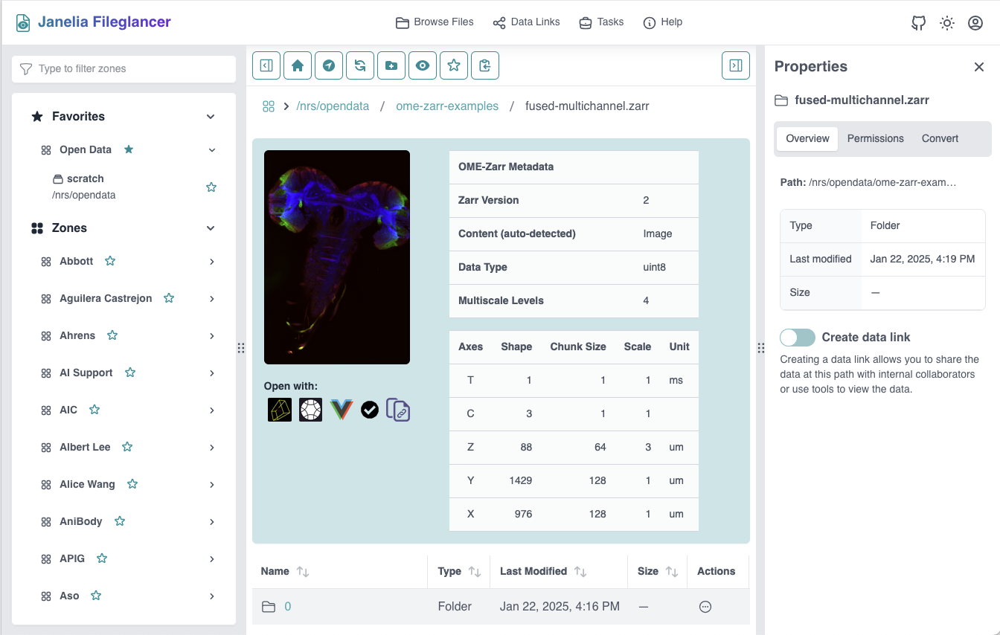

Purpose and Goal
Fileglancer is a web application that connects to internal file systems at Janelia Research Campus, designed to reduce friction and activation energy when researchers need to share large imaging datasets with colleagues. Rather than requiring data migration, Fileglancer allows users to keep their data on existing network file systems while providing modern web-based tools for browsing, sharing, and visualization.
My role on this project was implementing all features on the frontend using React, React Router, and TypeScript. As part of this, I was responsible for adding frontend unit testing using Vitest and React Testing Library and end-to-end test suite using Vitest and Playwright.
Spotlight: Migrating from mock APIs to real file system testing
The original Playwright tests used mock API endpoints to simulate file operations, but this approach couldn't catch bugs in the actual backend file system logic. I refactored the test infrastructure to use temporary directories and actual API calls, requiring several technical changes:
Coordinating test environment setup across Playwright configuration
The challenge was that test files needed to exist before the
Fileglancer server started, but Playwright fixtures run after the
server is already running. I solved this by moving file creation
into
playwright.config.js, where I create the temporary
directories, populate them with test data including minimal Zarr and
OME-Zarr data structures, and then pass their paths to the server
via the FGC_FILE_SHARE_MOUNTS environment variable.
This ensures the server sees the test files when it initializes,
enabling true end-to-end testing of file browsing, creation,
deletion, and data link operations.
Custom Playwright fixtures for test isolation and reusability
With real file system testing, I needed a way to ensure each test
started in a predictable state. I created a custom Playwright
fixture called fileglancerPage that handles setup (mock
API routes, login, navigation to test directory) and teardown
(cleanup of API mocks) automatically. Tests import this fixture and
receive a fully-configured page object, eliminating repetitive setup
code. The fixture uses Playwright's test.extend() API
to wrap the standard page fixture, demonstrating advanced
understanding of Playwright's architecture.
Current status
Fileglancer is published on PyPI and deployed in production at Janelia Research Campus, serving dozens of researchers who use it daily to share and visualize large imaging datasets. The frontend test suites I built run in CI/CD via GitHub Actions and have caught multiple regressions before they reached production.